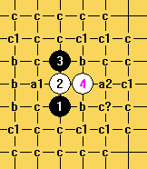
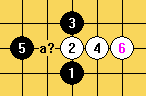
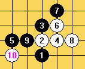
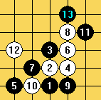
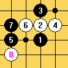
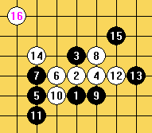
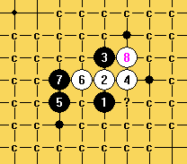

寒星强4打点梳理
#1 寒星强4打点梳理作者：屏蔽 发表时间：2013-8-13 0:20:11
原文载于我的百度空间【复平面】：
http://hi.baidu.com/arbil1989/item/e1c1d52b003cc20977272cdd
====================
世锦赛赛场鏖战正酣，作为观众自然各有各的关注点。今日从前方棋手获得一条消息，一个寒星五打中很常见的打点竟然被证明必败。吃惊之余，且不论对错真假，倒是让我能够静下心来重新看看这里的打点到底是个什么情况：

如图所示，此4子结构算不上稳定，黑棋一打必胜（a1）并不简单，二打必胜（a2）更是复杂难解，何况白棋随时准备或者活三贯穿左右或者团角构造禁手，其实黑棋并不好受，可选打点并没有想象中的那么多。大部分败点都因白棋的强攻而崩溃，其中各处c1的白必胜走法略为巧妙，有兴趣的读者不妨自行拆解。
c?通疏星经典必败变化，但有盘端问题，不过经多方求证后，大家也都表示必胜无疑，在此便留个悬念吧。4上下的b位其实是大家关注最少的点位，毕竟五手二打规则中此点几乎无用，而进入山口规则后寒星局最初是以六打定位的，据说此点黑优，但如何个优法，不知又有几人可以言明。

黑5有趣的变化，黑棋很强！白6必败？尚未验证，有兴趣的朋友可以自行拆解。

白6强防！黑7看似必然，实则7-4下亦可，同样变化激烈。图中定型后黑棋如何选择？无论如何选择皆为激烈交换变化，特别是白棋一旦找机会在中心团出十字，四面八方皆混乱不堪，实战中没有一定计算力恐怕难以把握。此型虽有黑必胜传闻，但目前看来还有些难以化解的问题，在此暂不做深究。
必须提醒的是，本图与上图虽看起来十分相似，实则有重大的次序区别，万万不可随意互通！

另一黑5的选点，两个对称点有盘端问题，差别很大，还需要深入研究！至黑13定型自然，黑棋好。右边白棋似乎无论如何都攻势（反击）不足，是否只能亦步亦趋防御？

鉴于黑棋活三穿通威力巨大，白棋先抢要点破坏形状也是很自然的。这里最初有8-7上的走法，但黑棋眠三盖头控制局面很输入。此8改良，虽然同样是挡活二，但利用自己的连接，强令黑棋顺势卖掉材料，使自己换取外势，乃是后发制人的策略。但黑棋也有所应对，硬是不走活三，依然继续保留。以下变化十分复杂。

此8是一度出现的白棋强硬攻击，如今通过世锦赛再次回到我们的视野。黑9看似是相当良好的控制走法，但白12关键一冲！14定型后黑棋当真无法阻挡白棋大势了吗？盘端是否有影响呢？Epifanov的研究似乎来自于俄慢，这个16也曾在我的脑海中留下印象，如今重出江湖，想必会激起一番风浪。

白8后的简图，深入拆解究竟是否能完全必胜？无论如何，在公开的山口规则定式研究处在起步阶段时，这样里程碑式的结论无论对错，其研究过程都将会产生相当深远的意义。
［ 暮雨迟同学于 2013-8-13 6:10:49 时花20金币送鲜花一朵］
［ 小丸.net 于 2013-8-14 9:17:22 时奖励此帖[金币加 100 威望加1］
#2 Re:寒星强4打点梳理作者：小样就是这个样 发表时间：2013-8-13 8:47:29
拆了上图，黑7是必胜，而且必胜的对称，这一习题那是极好的...
［ 日月丽天同学于 2013-8-13 8:53:01 时花20金币送鲜花一朵］
#3 Re:小样就是这个样【==Re:寒星强4打点梳理==】作者：小红眼镜 发表时间：2013-8-13 8:50:56
引用：这个必胜在贴吧屏蔽都亲自参与讨论过。。。不知道为啥他突然短路忘了。。还是发现了啥牛逼的漏洞。。。
原文由 小样就是这个样 发表于 2013-8-13 8:47:29 :
拆了上图，黑7是必胜，而且必胜的对称，这一习题那是极好的...
#4 Re:寒星强4打点梳理作者：屏蔽 发表时间：2013-8-13 9:08:19
咦你们不要这样，我是因为没拆过才这么说的啊。你以为我会像670那么不负责任么。#5 Re:寒星强4打点梳理作者：小样就是这个样 发表时间：2013-8-13 9:08:35
只是做了个地毯谱，没有深入检查到每一步黑棋到五个子的必胜
#6 Re:寒星强4打点梳理作者：恺恺 发表时间：2013-8-13 20:26:32
貌似11不反三我都还没拆好
#7 Re:寒星强4打点梳理作者：小样就是这个样 发表时间：2013-8-14 9:55:22
这样的11